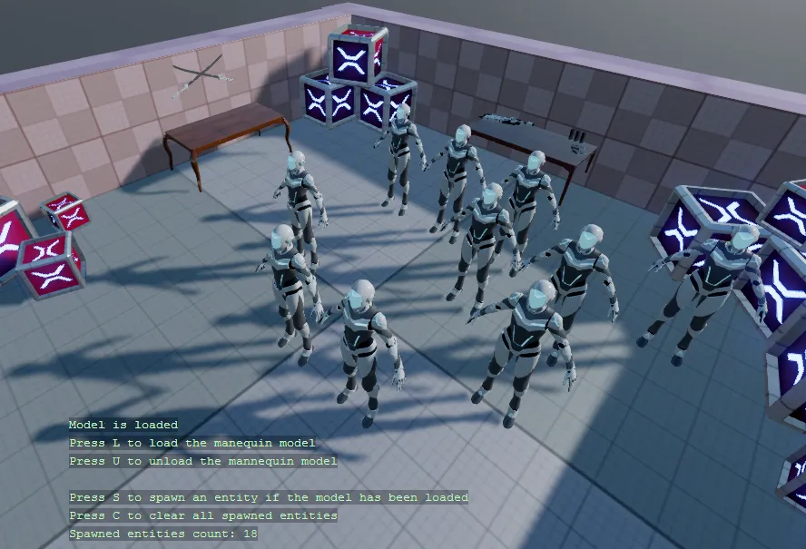

Loading content
You can find this sample in the tutorial project: Menu → Loading content from code
Explanation
This C# Beginner tutorial covers how to load content from code.
Assets like models, textures, sound etc can be loaded from during runtime. At that point we no longer speak of assets but of 'content'.
This tutorial specifically loads content of the Model type. Loaded content that is no longer required in your scene, should be unloaded again so save up memory. For more information on assets see Manage assets.

Code
With the L and U key you can either Load or Unload the model of a mannequin. If there is a model loaded, you can use the S key to spawn a new entity with the loaded mannequin model.
The C clears all of the spawned entities in the scene. This demo demonstrates that when models are unloaded, any entities that reference the model are still existing in the scene.
using System;
using System.Collections.Generic;
using Stride.Core.Mathematics;
using Stride.Engine;
using Stride.Input;
using Stride.Rendering;
namespace CSharpBeginner.Code
{
/// <summary>
/// This script demonstrates how we can load contect from code, and attach it to an entity
/// <para>
/// https://doc.stride3d.net/latest/en/tutorials/csharpbeginner/loading-content.html
/// </para>
/// </summary>
public class LoadingContentDemo : SyncScript
{
private Model loadedMannequinModel = null;
private Stack<Entity> spawnedEntities = new Stack<Entity>();
private Random random = new Random();
public override void Start() { }
public override void Update()
{
// To load any content we use the Load method. First we need to specify the type between the '< >'. The we provide the URL
if (Input.IsKeyPressed(Keys.L))
{
loadedMannequinModel = Content.Load<Model>("Models/mannequinModel");
}
// To remove loaded content we use the unload method to remove all existing models from the scene.
// Note: when we remove content, we can no longer see the model, but the entity still exists in the scene
if (Input.IsKeyPressed(Keys.U))
{
Content.Unload(loadedMannequinModel);
loadedMannequinModel = null;
}
// If the model has been loaded, create a new entity and randomly place it in the scene
if (Input.IsKeyPressed(Keys.S))
{
CreateEntityWithModelAndRandomlyPositionInScene();
}
// Clear all entities from the tutorial scene. This does not unload the model
if (Input.IsKeyPressed(Keys.C))
{
while (spawnedEntities.Count > 0)
{
Entity.Scene.Entities.Remove(spawnedEntities.Pop());
}
}
DebugText.Print("Model is " + (loadedMannequinModel == null ? "not loaded" : "loaded"), new Int2(340, 580));
DebugText.Print("Press L to load the manequin model", new Int2(340, 600));
DebugText.Print("Press U to unload the mannequin model", new Int2(340, 620));
DebugText.Print("Press S to spawn an entity if the model has been loaded", new Int2(340, 660));
DebugText.Print("Press C to clear all spawned entities", new Int2(340, 680));
DebugText.Print("Spawned entities count: " + spawnedEntities.Count, new Int2(340, 700));
}
private void CreateEntityWithModelAndRandomlyPositionInScene()
{
if (loadedMannequinModel != null)
{
// Create a new model component that references the loaded mannequin model
var modelComponent = new ModelComponent(loadedMannequinModel);
// Get a random position near the center of the scene
var randomPosition = new Vector3(random.Next(-2, 4), 0, random.Next(-2, 2));
// Create a new entity and attach a model component
var entity = new Entity("My new entity with a model component", randomPosition);
entity.Add(modelComponent);
// Add the new entity to the current tutorial scene
Entity.Scene.Entities.Add(entity);
// We add the spawned entities to a stack to keep track of them
spawnedEntities.Push(entity);
}
}
}
}